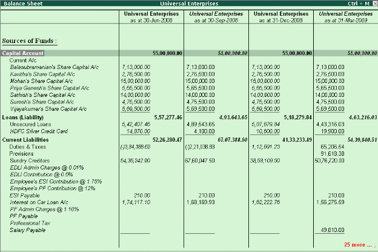

Multi-columnar reporting
In Tally.ERP 9, you can compare information using multi-columnar reports. You can view / compare information for multiple periods (year, month, quarter or any specified period), multiple currencies and so on for the same company or compare information for two or more companies in the same screen without toggling between different periods / companies. This flexibility and ease in comparison of information will help you to do meaningful analysis and bring out any exceptions immediately.
To view a Multi-Columnar Report
# Select any report (e.g. Balance Sheet)
# Select (Alt + N) Auto Column
# Select any option (company, year, month, quarter etc) and press Enter Tally.ERP 9 now displays comparisons based on the option selected.
